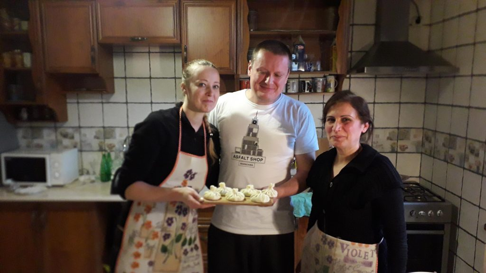
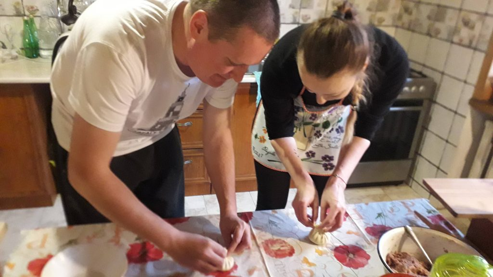
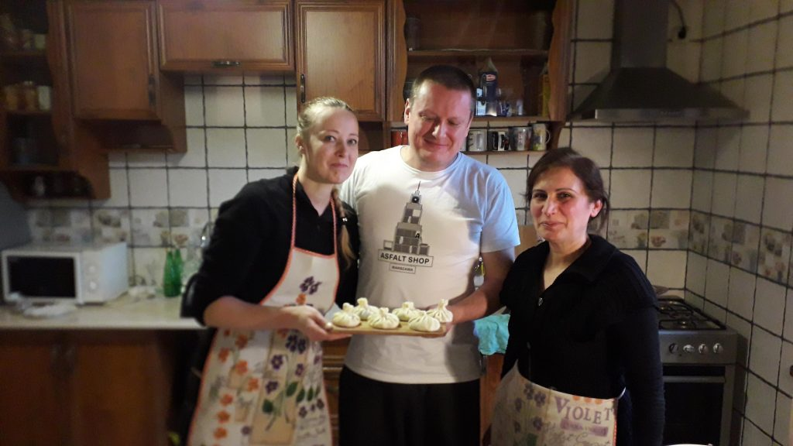
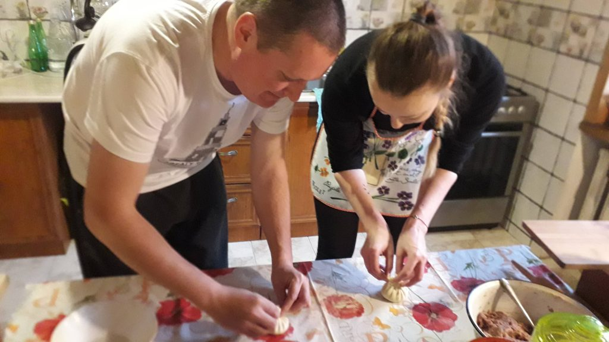

Culinary masterclasses in Kutaisi offers to Experience the delicious smells and tastes of the most popular Georgian food. Join a dynamic and joyful masterclass of Khinkali – meat dumpling, Khachapuri – cheese pie, Chadi – corn bread. Classes are organized in a local Georgian family. Khinkali is made by twisting knobs of dough stuffed with meat and spices. It is considered to be one of the most popular national dishes. Different regions of Georgia make khinkali with different fillings. The most popular filling is a mixture of pork and beef. In the mountains, khinkali is often made with a lamb filling. Churchkhela is a traditional candy made by repeatedly dipping a long string of nuts in tatara. It’s a mixture of flour, sugar, and Badagi (fresh grape juice). Georgians usually make Churchkhela in autumn when grapes and nuts are harvested. Churchkhela can also be made with dried fruit such as peach, apple, or plum and pumpkin seeds. Khachapuri, is Georgian cheese pie consisting of bread stuffed with melted cheese, often served sliced like a double-crust pizza. Different regions of Georgia have their own type of khachapuri. The most common is Imeretian khachapuri
Have a nice trip with Travel Kutaisi